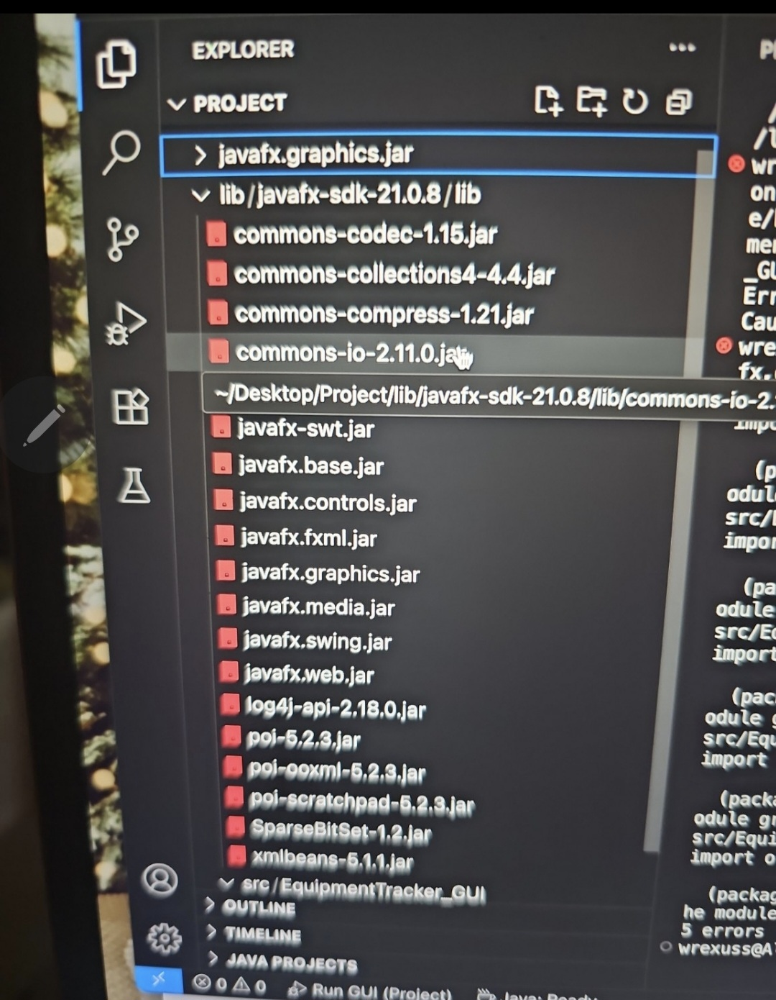
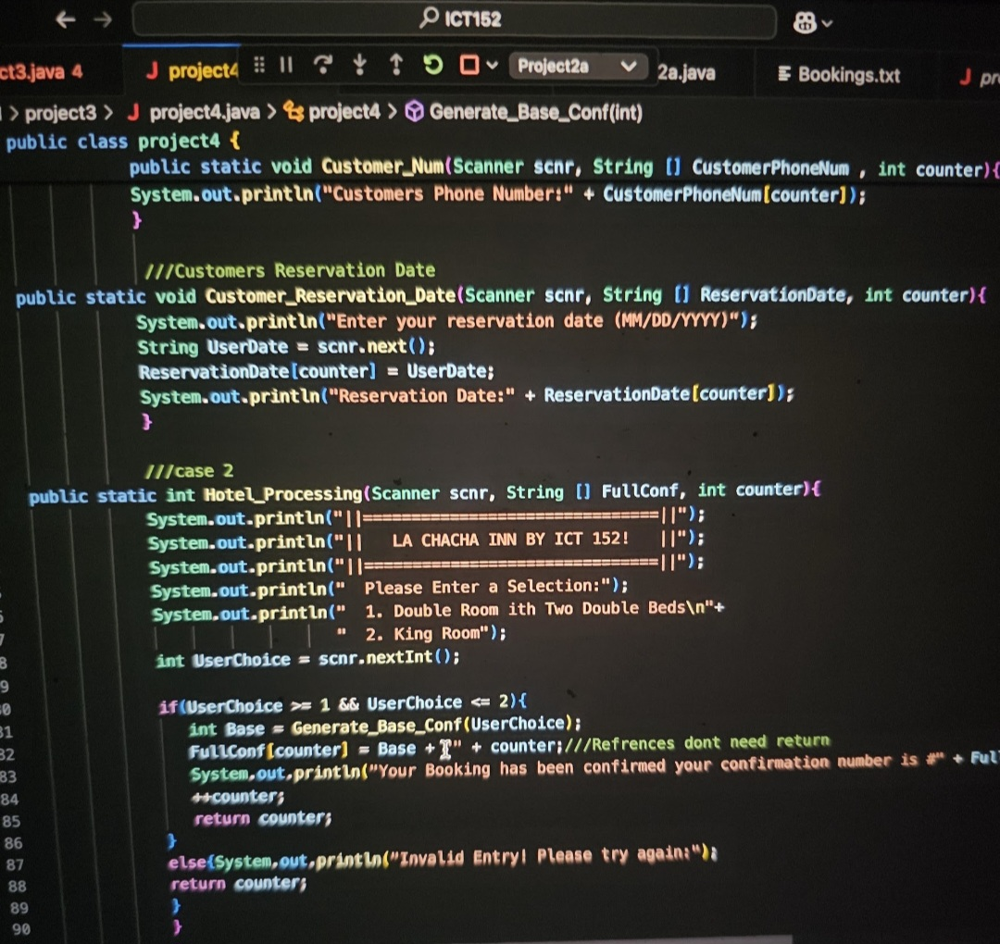
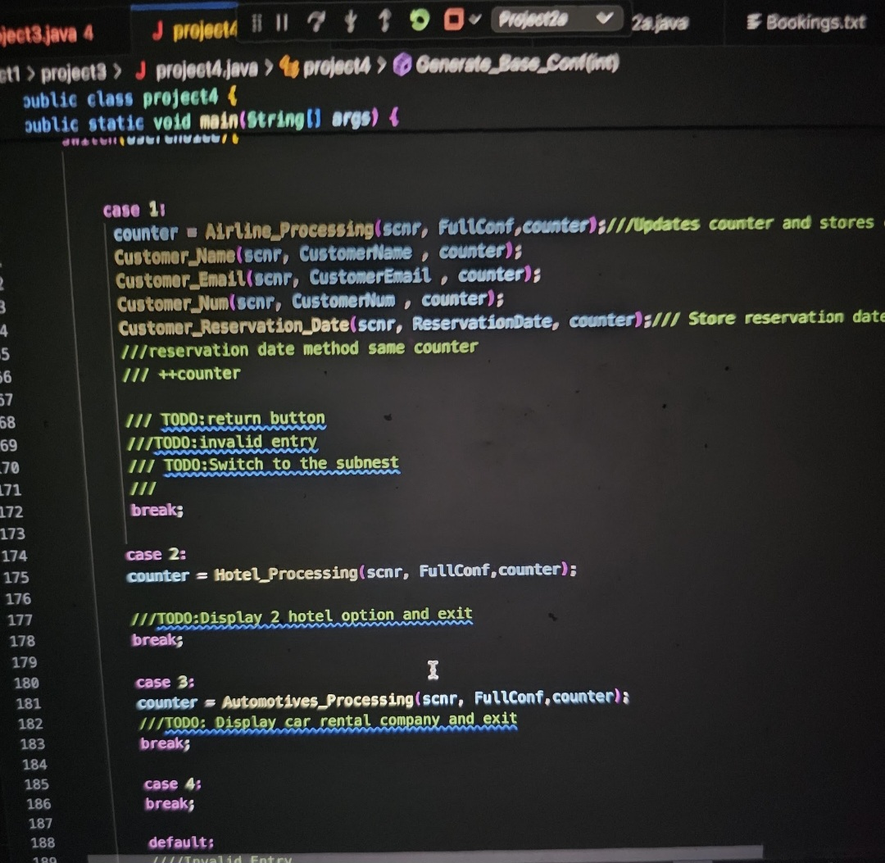
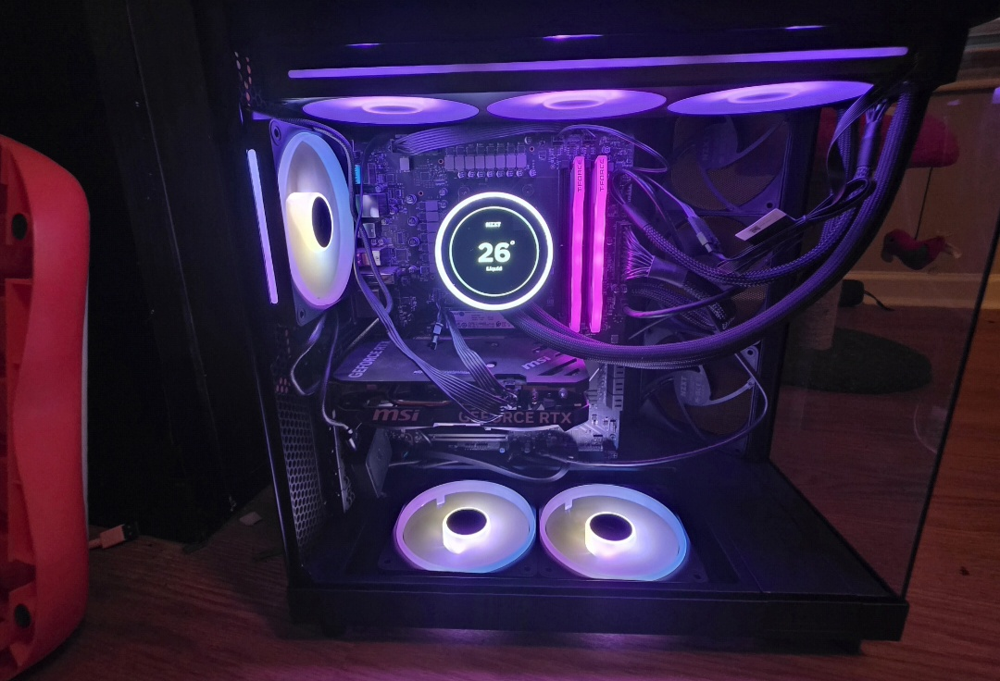
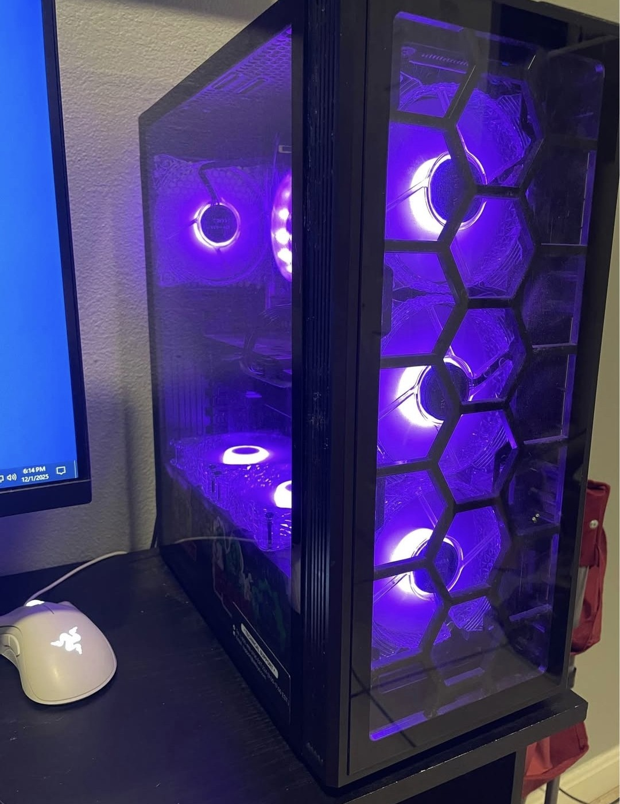
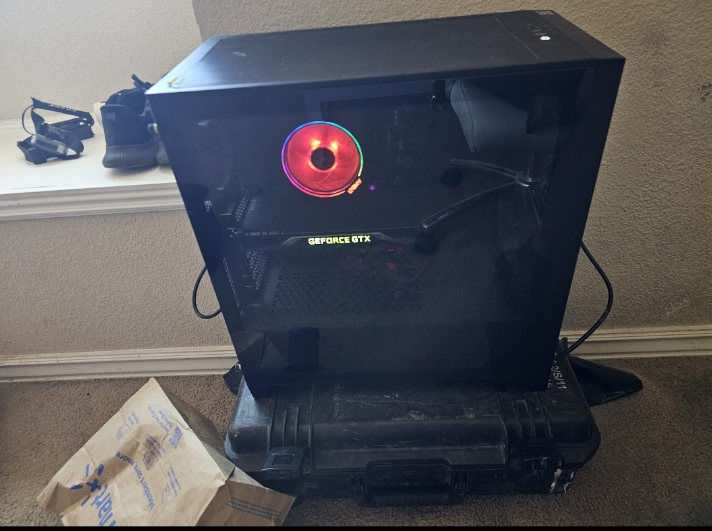
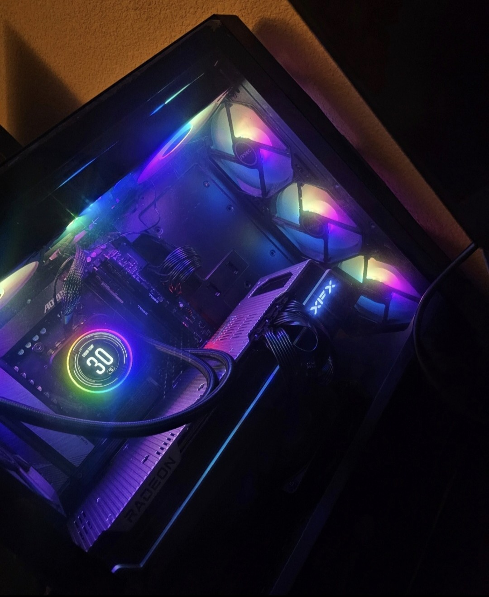

Java Programing



Below are some of John Does' PC builds over a 3-year span. 1st image is a home server running 2023 windows server GUI OS. This Home server has 64Gb of DDR4, 8Gb of Vram an AM4 Chip, 2tb NVME and a staggering 10Tb of HDD space. This server was used to run plex, Security Cameras, Minecraft server and to use RDP on a cheap laptop to use the servers’ resources for resource intensive tasks. The other builds are specifically for gaming some have 224Gb Video card while others have just 12Gb video card. All desktops are running on DDR5 and I am glad I did so before prices for ram skyrocketed.



